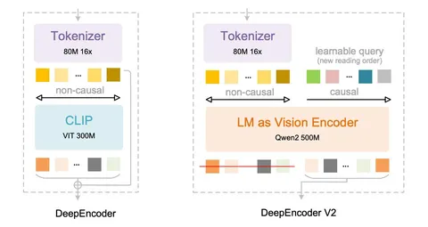
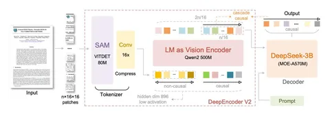
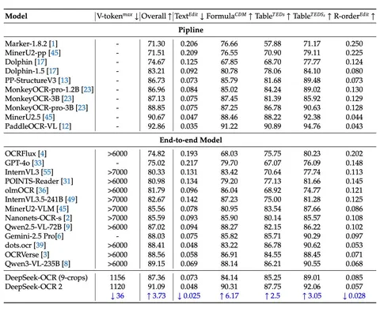

Сегодня разбираем статью, которая продолжает идею DeepSeek-OCR. Суть первой версии была в том, чтобы использовать глубокий энкодер на базе SAM и CLIP, а затем подавать токены в небольшой decoder-like-блок. Посмотрим, что нового предложили авторы.
Архитектура
Главное отличие от DeepSeek-OCR v1 в том, что вместо CLIP берут LLM (decoder-like-модель), а также добавляют обучаемые queries. Декодер при этом остаётся тем же.
В качестве визуального токенизатора используется SAM-base на 80M параметров. Дальше идут две свёртки, которые дают сжатие в 16 раз (каждая уменьшает размерность в два раза по каждой из осей). Сжатое представление подаётся в LLM. Токенизатор получается довольно компактным.
Авторы говорят, что теоретически можно было взять encoder-decoder-схему, как в mBART, но это плохо сходилось. И если не объединять всё в одну последовательность, не хватает взаимодействия между токенами, поэтому decoder-like-архитектура работает лучше.
Используются два режима подачи: 1024×1024 (256 токенов) у всего изображения целиком либо 768×768 для локальных кропов. Если документ небольшой, подают только целое изображение. Если документ большой, нарезают на локальные кропы и добавляют сжатое целое изображение.
Идея с обучаемыми queries
Авторы вдохновлялись двумя работами. Первая — DETR (2020) на тему детекции объектов. В ней картинку сначала прогоняют через ResNet и получают визуальные признаки, а затем делают кросс-аттеншн с набором object queries. Каждая query отвечает за потенциальный объект, и decoder-like-модель выдаёт предсказания по этим queries.
Вторая работа — BLIP-2. Это captioning-модель, в которой используется Q-former с обучаемыми queries. Они делают кросс-аттеншн к визуальным токенам из CLIP и передают уже агрегированное представление в LLM. В результате вместо сотен визуальных токенов в LLM передаётся компактное представление через queries.
Подход DeepSeek-OCR 2 во многом похож на Q-former, но здесь число query соответствует числу визуальных токенов.
LLM применяют, потому что они уже хорошо показали себя в инициализации для мультимодальных задач.
Данные
Авторы используют те же данные, что и для предыдущей версии. Чтобы модель не забывала общие визуальные представления, добавляют и обычную зрительную информациию, но распознавание текста преобладает. Распределение немного перебалансируют и делают небольшую доработку меток.
Обучение
Процесс обучения состоит из трёх стадий.
1) Encoder training: обучают только энкодер, а декодер заморожен. Смысл стадии — научить токенизатор и LLM работать как энкодер: извлекать признаки, сжимать токены и собирать представление.
2) Query enhancement: обучают энкодер и декодер вместе. Происходит донастройка их совместной работы.
3) Decoder specialization: замораживают энкодер и финально доучивают только декодер.
Результаты
Авторы замеряются на большом двуязычном (английский и китайский) бенчмарке OmniDocBench v1.5. Он содержит примерно 1400 документов разных категорий, включая журналы, академические статьи и отчёты.
В сравнении с бейзлайнами в новой версии чуть меньше токенов, то есть модель дешевле, но при этом общее качество выросло примерно на 4%. Больше всего улучшились срезы по формулам и таблицам. Также уменьшилась метрика Edit Distance, которая показывает, насколько распознанный текст отличается от эталона в документе.
Сравнение идёт с InternVL, Miner и другими OCR-специфичными подходами. По цифрам PaddleOCR-VL всё ещё выглядит чуть лучше.
В некоторых аспектах DeepSeek-OCR v2 есть куда расти — например, в задаче распознавания текста на газетах. Объясняют это тем, что на очень насыщенных текстом документах выбранные разрешения и степень сжатия могут мешать точному распознаванию, и для улучшения, возможно, нужно обучаться на большем количестве кропов.
В итоге авторам удалось получить решение, которое быстро, недорого и с хорошим качеством обрабатывает документы. Код и модель выложены в публичный доступ.
Разбор подготовил
CV Time


